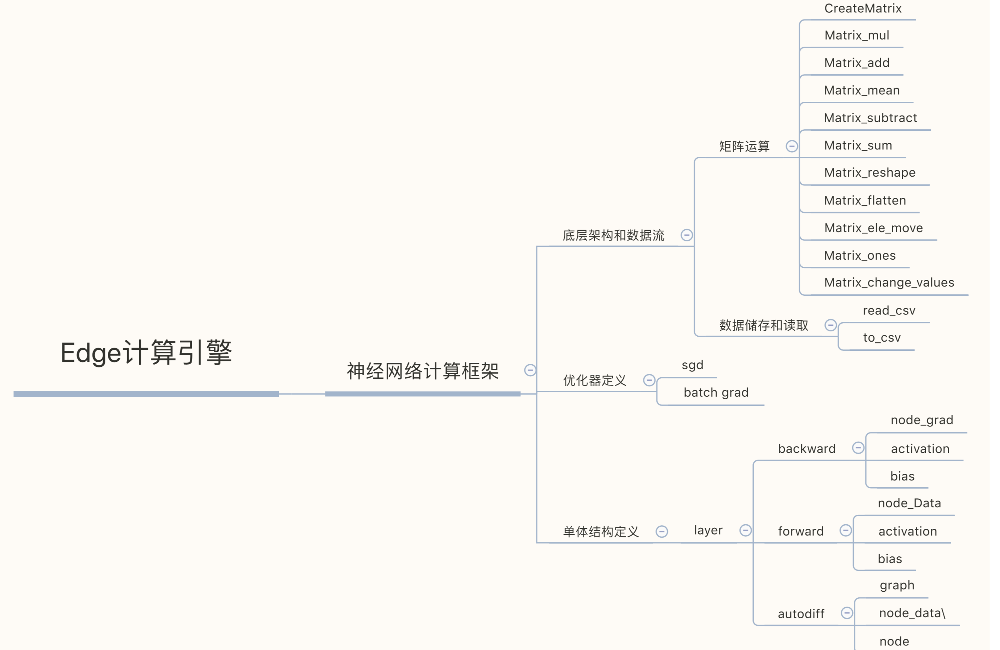

Edge-Engine
Edge : 一个开源的科学计算引擎
声明：本项目禁止闭源商用，如有需要请和作者取得联系
email: zk@likedge.top

项目开始日期 : 2019/10/01
目前项目总代码 : 810 行
测试 : main.cpp | nerual_network.cpp | 新增全连接神经网络架构(新增全连接网络正向传播和反向传播的测试demo)
测试环境:
MacBook Pro
编译器环境:
Configured with: --prefix=/Applications/Xcode.app/Contents/Developer/usr --with-gxx-include-dir=/Applications/Xcode.app/Contents/Developer/Platforms/MacOSX.platform/Developer/SDKs/MacOSX10.14.sdk/usr/include/c++/4.2.1 Apple LLVM version 10.0.1 (clang-1001.0.46.4) Target: x86_64-apple-darwin18.7.0 Thread model: posix

这是什么?

安装编译
xgit clone git@github.com:AllenZYJ/Edge-Computing-Engine.gitcd to install_diff
进入install_diff目录:
执行
xxxxxxxxxxmakemake install
编译demo入口程序
xxxxxxxxxx➜ edge-computing-engine git:(master) ✗ g++ main.cpp -o ma -lautodiff或者BP测试程序
xxxxxxxxxx➜ edge-computing-engine git:(master) ✗ g++ nerual_network.cpp -o ma运行
xxxxxxxxxx➜ edge-computing-engine git:(master) ✗ ./main最新卷积实现：
xxxxxxxxxxdouble conv_test(Matrix mid1,int input_dim = 3,int output_channels = 3,int stride = 1,int kernel_size = 2,int mode = 0,int padding = 0)
序贯模型api使用方法:
edge_network(int input, int num_neuron)
作为序列模型api
edge_network作为一个类型存在,位于matrix_grad.h中结构体类型的数据
定义了前向传播函数,前向传播无激活版,反向传播,末层反向传播,四大最常用的函数主体.
完整的序列模型:

新的demo程序实现5层全连接层,可自定义神经元和激活函数,损失函数
全连接层使用方法:
第一层的权重自定义,而后调用forward函数前向传播一层,自动求出激活以后的值,激活函数可自定义.
首先定义一个权重矩阵和偏置矩阵,第一个矩阵的维度大小使用数据列去定义:
xxxxxxxxxxMatrix bias1 = CreateRandMat(2,1);Matrix weight1 = CreateRandMat(2,data.col);之后可以输出第一层前向传播的值,同时可以定义下一层的bias的维度, row使用第一层的权重矩阵的行,第二层的权重矩阵的行使用了第一层的输出的行, 而列自行定义即可, 这一点体现了前向传播算法的维度相容. 也就是:
xxxxxxxxxxMatrix output1 = sequaltial.forward(get_T(get_row(data_mine,index)),weight1,bias1);xxxxxxxxxxMatrix weight2 = CreateRandMat(output1.row,2);Matrix bias2 = CreateRandMat(weight2.row,1);Matrix output2 = sequaltial.forward(output1,weight2,bias2);同时第二层的输出也可以求出来,以此类推 .
最终输出代码见nerual_test.cpp 
代码:
xxxxxxxxxxMatrix data_mine = CreateRandMat(2,1);Matrix label = CreateMatrix(2,1);Matrix weight1 = CreateRandMat(2,2);Matrix weight2 = CreateRandMat(2,2);Matrix weight3 = CreateRandMat(2,2);Matrix weight4 = CreateRandMat(2,2);for(int epoch = 0;epoch<20;epoch++){cout_mat(weight1);edge_network sequaltial(2,2);Matrix output1 = sequaltial.forward(data_mine,weight1);Matrix output2 = sequaltial.forward(output1,weight2);Matrix output3 = sequaltial.forward(output2,weight3);Matrix output4 = sequaltial.forward(output3,weight4);Matrix output_end = sequaltial.end_layer_backward(label,output4);//get the forwardMatrix backward1 = sequaltial.backward(output_end,output3,weight4);Matrix grad_w1w2 = mul_simple(backward1,data_mine);Matrix backward2 = sequaltial.backward(backward1,output2,weight3);Matrix grad_w3w4 = mul_simple(backward2,data_mine);Matrix backward3 = sequaltial.backward(backward2,output1,weight2);Matrix grad_w5w6 = mul_simple(backward3,data_mine);Matrix backward4 = sequaltial.backward(backward3,output4,weight1);Matrix grad_w7w8 = mul_simple(backward4,data_mine);weight1 = subtract(weight1,times_mat(0.0001,padding(grad_w1w2,2,2)));weight2 = subtract(weight2,times_mat(0.0001,padding(grad_w3w4,2,2)));weight3 = subtract(weight3,times_mat(0.0001,padding(grad_w5w6,2,2)));weight4 = subtract(weight4,times_mat(0.0001,padding(grad_w7w8,2,2)));}xxxxxxxxxx---------epoch: 0------------loss: 4.65667loss: 3.28273---------epoch: 1------------loss: 4.65655loss: 3.28265---------epoch: 2------------loss: 4.65643loss: 3.28257---------epoch: 3------------loss: 4.65631loss: 3.28249---------epoch: 4------------loss: 4.65619loss: 3.2824---------epoch: 5------------loss: 4.65607loss: 3.28232---------epoch: 6------------loss: 4.65596loss: 3.28224---------epoch: 7------------loss: 4.65584loss: 3.28216---------epoch: 8------------loss: 4.65572loss: 3.28208---------epoch: 9------------loss: 4.6556loss: 3.282---------epoch: 10------------loss: 4.65548loss: 3.28192---------epoch: 11------------loss: 4.65536loss: 3.28184---------epoch: 12------------loss: 4.65524loss: 3.28176---------epoch: 13------------loss: 4.65512loss: 3.28168---------epoch: 14------------loss: 4.65501loss: 3.2816---------epoch: 15------------loss: 4.65489loss: 3.28152---------epoch: 16------------loss: 4.65477loss: 3.28144---------epoch: 17------------loss: 4.65465loss: 3.28136---------epoch: 18------------loss: 4.65453loss: 3.28128---------epoch: 19------------loss: 4.65441loss: 3.2812Bp反向传播的demo程序基于Pytorch官方代码模拟实现测试
迭代结果 :
W1: 0.6944 1.52368 -1.46644 -0.154097 W2: 1.10079 0.462984 loss: 0.559269
epoch:100 , 可自行测试.
输出最终损失和参数迭代结果.
-----------split-line----------- 2.79955 0.36431 -0.451694 epoch: 100 error: 6.05895 -----------split-line----------- 0.009167(sum of loss)
目前实现的程序接口
API:
Matrix read_csv(string &file_path)读取格式化文件(csv),返回一个自动计算长度的矩阵.
实现格式化文件写入接口.比较pandas.to_csv.
矩阵广播机制,实现padding接口
全连接层前向传播和反向传播接口,支持自动求导
矩阵微分和自动求导接口封装
int save_txt(Matrix mid1,string path = "./",string delimiter = ",",string header="./") 设计文件流获取文件头部接口 , 写入格式化文件 , 已设计支持矩阵类型数据写入,支持自定义表头,写入文件路径 , 自定义分隔符,默认为" , ".
Create a matrix : create(row,cols)开辟一个矩阵结构的内存,元素初值为0;
Change the element for matrix void move_ele(int &ele1, int &ele2),修改某一个位置的元素的值.
Matrix1+Matrix2 : Matrix add(Matrix mid1,Matrix mid2,int flag=1),矩阵加和操作接口,可选位运算加速.
Flag is how to compete the ele ,default 1 ,bitwise operation(位运算加速).
Matrix1-Matrix2 : Matrix subtract(Matrix mid1,Matrix mid2)
Matrix1*Matrix2 : Matrix mul(Matrix mid1,Matrix mid2)
Matrix1*n : Matrix times_mat(int times,Matrix mid1)
Matrix1's Transposition : Matrix get_T(Matrix mid1)矩阵转置
Mul(matrix1,matrix2)矩阵乘积(完整数学定义).
double* flatten(Matrix mid1) : Return a flattened array.矩阵展开
Matrix matrix_rs(Matrix mid1,int rs_row,int rs_col) 矩阵的结构压缩
double matrix_sum(Matrix mid1)矩阵求和
double matrix_mean(Matrix mid1)均值
Matrix appply(Matrix mid1,Matrix mid2,int axis = 0)矩阵拼接
Matrix iloc(Matrix mid1,int start_x=0,int end_x=0,int start_y=0,int end_y=0)矩阵切片
Matrix mul_simple(Matrix mid1,Matrix mid2)为了贴合机器学习的需要,实现了矩阵对应元素相乘,请与传统意义的矩阵乘法区分开.
Relu激活函数矩阵接口
均方误差矩阵接口
创建随机权重矩阵接口
即将着手开发:
卷积神经网络定义(包括但不限于卷积核,池化层定义,自定义损失接口).
随机森林算法封装.
主流网络架构实现.
反向传播测试demo:
xxxxxxxxxxusing namespace std;clock_t start, stop;double duration;int main(){ welcome(); string path = "./data/nerual_data.csv"; Matrix data = read_csv(path); Matrix bais = CreateMatrix(data.row,1); Matrix x = iloc(data,0,100,0,2); Matrix y = iloc(data,0,100,2,3); int N=100,in_Dim=2,H_num=2,out_Dim=2; double learning_rate = 0.0001; Matrix W1 = CreateRandMat(in_Dim,H_num); Matrix W2 = CreateRandMat(H_num,out_Dim); cout_mat(W1); cout_mat(W2); for(int epoch = 0;epoch<100;epoch++) { Matrix x_w1 = mul(x,W1); Matrix re = mat_relu(x_w1); Matrix out = mul(re,W2); Matrix mat_sq = mat_sq_loss(out,y); Matrix grad_y_pred = times_mat(2.0,subtract(out,y)); Matrix grad_w2 = mul(get_T(re),grad_y_pred); Matrix grad_h_relu = mul(grad_y_pred,get_T(W2)); Matrix grad_h_relu_copy = mat_relu(grad_h_relu); Matrix grad_w1 = mul(get_T(x),grad_h_relu_copy); Matrix dw1 = times_mat(learning_rate,mul(get_T(x),grad_h_relu_copy)); W1 = subtract(W1,dw1); W2 = subtract(W2,times_mat(learning_rate,grad_w2)); cout<<"W1: "; cout_mat(W1); cout<<"W2: "; cout_mat(W2); cout<<"loss"<<": "; cout<<matrix_sum(mat_sq)/100<<endl; }}
演示:矩阵乘法
Matrix A：
| 第1列 | 第2列 | 第3列 | 第4列 | 第5列 |
|---|---|---|---|---|
| 72.0000 | 0.0000 | 0.0000 | 0.0000 | 0.0000 |
| 0.0000 | 64.0000 | 0.0000 | 0.0000 | 0.0000 |
| 16.0000 | 8.0000 | 0.0000 | 0.0000 | 0.0000 |
| 0.0000 | 0.0000 | 56.0000 | 16.0000 | 32.0000 |
| 0.0000 | 0.0000 | 0.0000 | 0.0000 | 0.0000 |
| 0.0000 | 0.0000 | 0.0000 | 0.0000 | 0.0000 |
MAtrix B：
| 第1列 | 第2列 | 第3列 | 第4列 | 第5列 | 第6列 |
|---|---|---|---|---|---|
| 72.0000 | 0.0000 | 16.0000 | 0.0000 | 0.0000 | 0.0000 |
| 0.0000 | 64.0000 | 8.0000 | 0.0000 | 0.0000 | 0.0000 |
| 0.0000 | 0.0000 | 0.0000 | 56.0000 | 0.0000 | 0.0000 |
| 0.0000 | 0.0000 | 0.0000 | 16.0000 | 0.0000 | 0.0000 |
| 0.0000 | 0.0000 | 0.0000 | 32.0000 | 0.0000 | 0.0000 |
To
| 第1列 | 第2列 | 第3列 | 第4列 | 第5列 | 第6列 |
|---|---|---|---|---|---|
| 5184.0000 | 0.0000 | 1152.0000 | 0.0000 | 0.0000 | 0.0000 |
| 0.0000 | 4096.0000 | 512.0000 | 0.0000 | 0.0000 | 0.0000 |
| 1152.0000 | 512.0000 | 320.0000 | 0.0000 | 0.0000 | 0.0000 |
| 0.0000 | 0.0000 | 0.0000 | 4416.0000 | 0.0000 | 0.0000 |
| 0.0000 | 0.0000 | 0.0000 | 0.0000 | 0.0000 | 0.0000 |
| 0.0000 | 0.0000 | 0.0000 | 0.0000 | 0.0000 | 0.0000 |
演示: 矩阵展开(flatten).
double* flatten(Matrix mid1)
| 1 | 2 | 3 |
|---|---|---|
| 2 | 4 | 6 |
| 7 | 8 | 9 |
To
| 1 | 2 | 3 | 2 | 4 | 6 | 7 | 8 | 9 |
|---|---|---|---|---|---|---|---|---|
| Like numpy.flatten |
function:
演示: 邻接矩阵的参数定义:
Matrix appply(Matrix mid1,Matrix mid2,int axis = 0)
参数 axis=0 :
| 0 | 7 | 2 |
|---|---|---|
| 0 | 3 | 1 |
| 0 | 0 | 0 |
| 0 | 0 | 11 |
| 0 | 7 | 2 |
| 0 | 3 | 1 |
| 0 | 0 | 0 |
| 0 | 0 | 11 |
axis = 1:
| 0 | 7 | 2 | 0 | 7 | 2 |
|---|---|---|---|---|---|
| 0 | 3 | 1 | 0 | 3 | 1 |
| 0 | 0 | 0 | 0 | 0 | 0 |
| 0 | 0 | 11 | 0 | 0 | 11 |
更新2019/11/18/00:12
read_csv 通过文件流读取逗号分隔符文件,返回一个自动计算长度的矩阵.
例如 CSV's head :
-0.017612 14.053064 0 -1.395634 4.662541 1 -0.752157 6.53862 0 -1.322371 7.152853 0 0.423363 11.054677 0 0.406704 7.067335 1 Get:

Logistic Regression demo base Edge:
xxxxxxxxxxusing namespace std;clock_t start, stop;double duration;int main(){ welcome(); string path = "./new_data2.csv"; Matrix data = read_csv(path); Matrix bais = CreateMatrix(data.row,1); data = appply(data,bais,1); Matrix y = iloc(data,0,0,3,4); Matrix x_1 = iloc(data,0,0,0,3); Matrix x_2 = get_T(x_1); double alpha = 0.002; int max_epoch = 100; Matrix weight = CreateMatrix(3,1); change_va(weight,0,0,1); change_va(weight,1,0,1); change_va(weight,2,0,1); int epoch = 0; for(epoch = 0;epoch<=max_epoch;epoch++) { cout<<"-----------split-line-----------"<<endl; Matrix temp_mul = mul(x_1,weight); Matrix h =e_sigmoid(temp_mul); Matrix error = subtract(y,h); Matrix temp_update = mul(x_2,error); Matrix updata = add(weight,times_mat(alpha,temp_update),0); cout_mat(weight); cout<<"epoch: "<<epoch<<" error: "<<matrix_sum(error)<<endl; cout<<"-----------split-line-----------"<<endl; } stop = clock(); printf("%f\n", (double)(stop - start) / CLOCKS_PER_SEC); return 0;}Something :
- 矩阵元素默认为1
- 使用位运算加速防止填充过大的数值,但是会损失一定精度,慎用.
- 记得delete(matrix)在你使用完一个矩阵计算单元以后.
- api接口更多的接近于pandas和numpy的使用习惯.
- 更多的细节参见目前最新的代码
- 欢迎star和关注.
- autodiff部分感谢国外博主Omar的思路提醒.

个人小站:极度空间
作者邮箱:zk@likedge.top | edge@ibooker.org.cn
QQ:2533524298